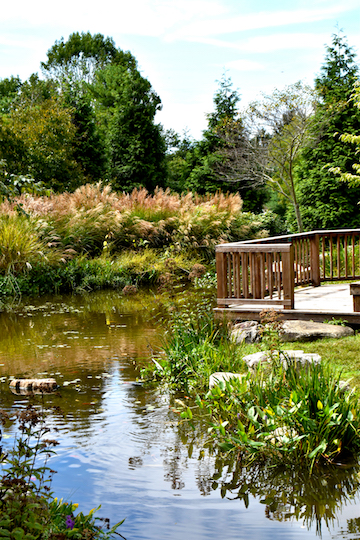

Grazing Horses
This picture was captured during my walk back to the Oak Lane community on a sunny day. The horses graze the field closest to the road everyday, but as the weather becomes colder they have slowly dissapeared into the comfort of their barn. The light shines perfectly on the coats of these beautiful creatures as they fuel their hunger with the bright green grass.

Sunkissed Apples
During the sunday morning farmers market I came across these bright colored fall apples. These apples are picked locally, which makes them look and taste even better.The light was hitting the crown of each apple perfectly and I wanted to make sure I captured the moment.

Good Food Pup
This pup was an amazing model. He was coincidentally standing next to the "Good Food" sign with his tongue out ready to feast on some of the menu items. The green contrasts with the white and brown highlighted dog, which also emphasizes the my focal point with is the "Good Food Pup."
Treats and Sweets
I love fresh baked goods at the farmers market. This picture displays all the different varieties of sweets and treats you can get at the farmers market for breakfast. Sausage cheddar strata anyone?
Hot Chili Peppers
The colors of these sweet chili's were expecially vibrant when contrasted against the yellows and greens in the background.
Evening Rays
During a dinner at the Smithfield Plantation on a fall evening I made sure to capture the fading suns rays. The pumpkins on the brick steps give a spooky halloween feel, so naturally I had to snap a pic!
Market Flowers
These colors stood out to me because they were at my eye level. I love the aesthetic of the red, green and yellow flowers against the metal containers.

Mommy and Me
This intimate moment between mother and daughter was picture perfect. The girl is holding her mothers hand while also snacking on a red apple in the other. Her small bare feet and messy hair translate into what a child should be, which is care free. She seems more than content spending her sunday morning with her mother at the local farmers market.

Birchy Birds
I took this photo while sauntering though Hanh Horticulture garden. Displays of art were placed strategically throughout the beds, some hiding from the naked eye. The materials used to make this art installation allow the piece to blend into nature and become one with garden.
The Dahlia Guy
This entomolgy professor's love for bees and nature inspires him to sell the dahlia's he grows in his garden. He is known to the community as the Dahlia Guy. I took this picture because it truly represents the farmers market. Local people who love what they do and love the Virginia tech community that they are involved with.

Autumn Harvest
I took a picture of this pathway while walking passed the Smithfield Plantation. The corn harvest and pumpkin glow as the sun shines behind. I love how the orange pops against the flourescent green grass as well.

Hahn Pond Life
This photo is one of my favorites. I love how the picture gives off a golden hour tone. The green makes the estuary look healthy and plentiful. I cropped the picture in order to put the wooden overlook to the side so viewers could focus on the rippling water in the foreground. My favorite part of the photo is the golden topped vegetation in the background swaying in the wind.


{kind=link}
{kind=link}
{kind=link}
{kind=link}
{kind=link}
{kind=link}
{kind=link}